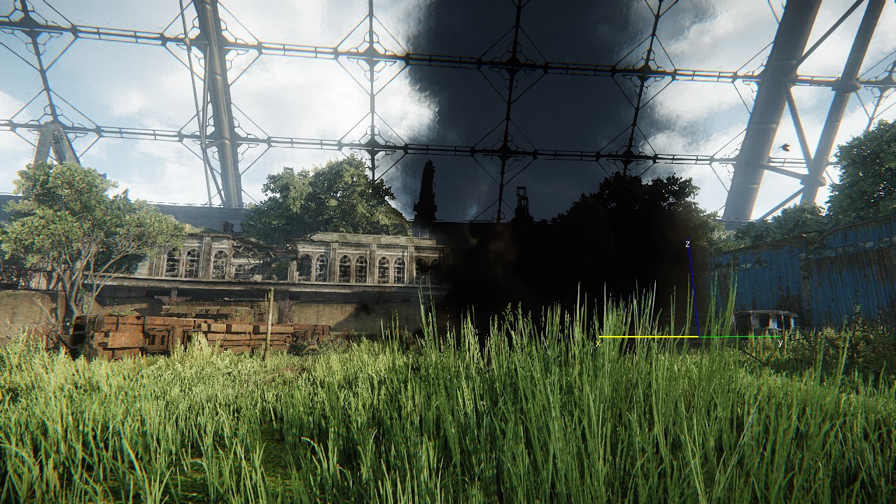
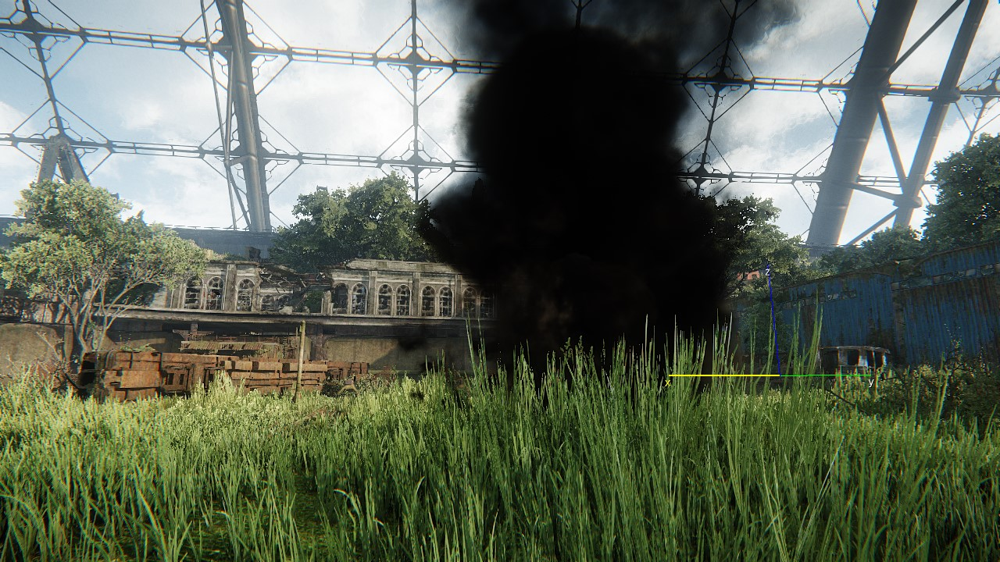

Overview
Brushes are solid objects that cannot be modified or moved dynamically during gameplay, except if they have a break-point specified in the asset file, for example, a breakable wooden shack.
Typically brushes are static objects placed in the world. They are one of the cheapest rendered objects as they don't have any of the entity or physics overhead of other objects.
A large percentage of the visual structures in your worlds will probably be constructed using brushes.
Search Bar
The Search Bar enables you to display objects with a selected keyword in the title. To use it, simply start typing into the filter box and the browser list will only show you objects that (partly) match the current search.
Object Preview
A preview of the selected object will be displayed in this section.
Properties
To access the Brush properties, make sure to select the Brush Entities from the Create Object tab and drop them in your level.
Property | Description |
|---|---|
Geometry | This option specifies the geometry that needs to be used for the object. |
Ignore Visareas | When enabled, the entity ignores the use of VisAreas in the level. |
Cast Shadow Maps | When this option is set, the object will cast shadows onto other geometry/terrain/etc. |
Global Illumination | Enables/disables voxelization for GI (this affects indirection occlusion from this object). |
Dynamic Distance Shadows | Cached shadows work very well with static objects, however, dynamic objects won't get their shadows updated when moving. This can be more or less noticeable depending on the case. For e.g, in a large windmill, the error can be obvious at medium distance. To overcome this, dynamic objects can selectively be excluded from the cache and rendered to the standard cascades. The performance overhead of enabling the feature for a limited number of entities is generally quite low. |
Rain Occluder | Set the brush to occlude rain, this works in conjunction with Rain Entity. |
Support Second Visarea | Normally, objects are considered to be in only one visarea. |
Hideable | When this option is set, AI will use this object as a hiding spot, using the specified hide point type. |
Lod Ratio | Defines how far from the current camera position, the different Level Of Detail models for the object are used. |
View Dist Ratio | Defines how far from the current camera position, the object can be seen. |
Exclude From Navigation | When this option is set, the object will not be considered as a part of the AI triangulation system. This ensures that the geometry of the object will not contribute to NavMesh generation and it will not generate any NavMesh on top of the object, or any hole in the NavMesh where the object is placed. |
No Dynamic Water | Avoids boolean-merge on any surrounding static that intersects with the first vessel. |
AI Radius | Deprecated, Pre-MNM - This option specifies the radius that will be used for the object by the AI triangulation system. |
No Static Decals | When this option is set, decals will not project onto the object. |
Recv Wind | When this option is set, the object will be affected by the level wind. |
Occluder | Used for the construction of a level occlusion mesh. |
DrawLast | This function is exposed to give per-object control over alpha-sorting issues. The DrawLast checkbox gives designers per-object control over alpha-sorting issues such as particle effects in front of glass objects. In the example below, the background glass dome panels use 50% opacity and are incorrectly rendered in front of the particle effect. By activating the Draw Last checkbox for the background dome object, the engine knows that any alpha based objects   |
Shadow Lod Bias | When enabled, LOD levels for the shadows are chosen based on the onscreen size of an object. |
| Ignore Terrain Layer Blend | Controls blending with terrain layers. For more information, please refer to the Terrain Layer Blending into Objects page. |
| Ignore Decal Blend | Controls blending with decals. For more information about Decals, please refer to the Decal page. |
CGF | Reloads or saves the Brush entity as a .cgf file. |